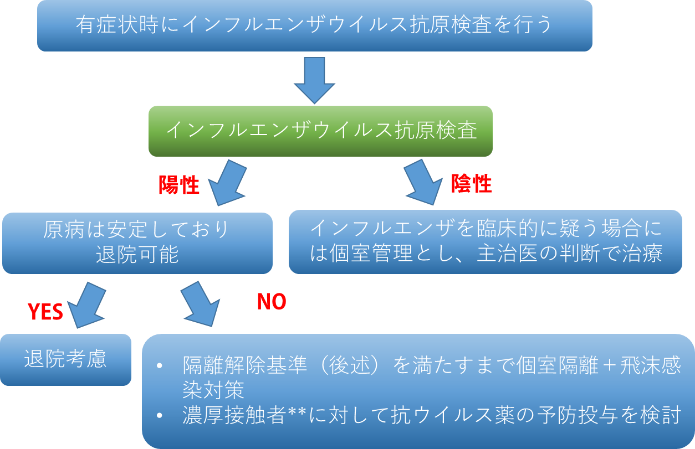
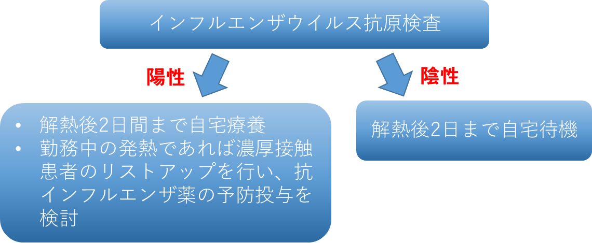
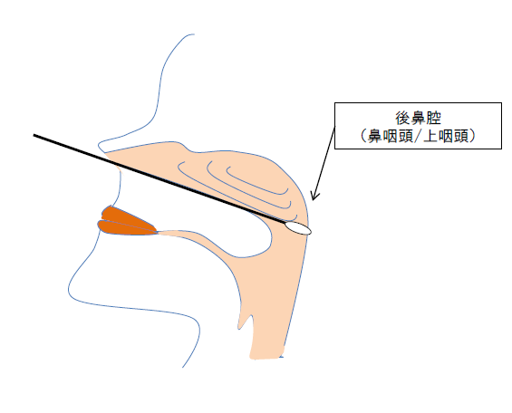

Ⅴ. 疾患別感染対策 8. 季節性インフルエンザ院内感染対策
このマニュアルは季節性インフルエンザに対応するものであり、新型インフルエンザ、鳥インフルエンザ等については状況に応じて別途定めることとする。
- 臨床
インフルエンザは、インフルエンザウイルスによる気道感染症である。本邦のインフルエンザの発生は、毎年11月下旬から12月上旬頃に始まり、翌年の1～3月頃にかけて患者数が増加し、3～4月に向かって減少していくパターンを示すが、夏季に患者が発生することもある。
インフルエンザが大流行した年には、インフルエンザ死亡者数のみならず、肺炎死亡者数が顕著に増加し、さらには循環器疾患を始めとする各種の慢性基礎疾患を死因とする死亡者数も増加し、結果的に全体の死亡者数が増加することが明らかになっている（超過死亡）。このためインフルエンザは、「一般のかぜ症候群」とは分けて考えるべき「重くなりやすい疾患」との認識が必要である。
●感染経路：飛沫感染経路をとる
●潜伏期間：1～3日
●症状：インフルエンザを疑う下記の症状
- 突然の発症
- 38℃を超える発熱
- 上気道炎症状
- 全身倦怠感等の全身症状
発熱（通常38 ℃以上の高熱）・頭痛・全身の倦怠感・筋肉痛・関節痛などが突然現われ、咳・鼻汁などの上気道炎症状がこれに続き、約1週間の経過で軽快するのが典型的なインフルエンザで、いわゆる「かぜ」に比べて全身症状が強いのが特徴である。
ハイリスクグループ：高齢者、年齢を問わず呼吸器・循環器・腎臓に慢性疾患を有する患者、糖尿病などの代謝疾患・免疫機能が低下している患者。従って当院に入院中の患者はほとんどハイリスクグループと考えられる。
小児ではインフルエンザに伴い、インフルエンザ脳症など中枢神経症状を呈することも稀にある。
入院患者にインフルエンザ罹患を疑う場合の対応

*入院後2日を経過してから発症した場合は、院内感染疑い事案として平日日中は感染制御部（内線5093）へ、土日夜間はoncall対応に事務当直経由で連絡する。
**発症日以後マスク無しで15分以上会話した者
職員にインフルエンザ罹患を疑う場合の対応

一般名 |
| ザナミビル | オセルタミビル | ラニナミビル | ペラミビル | バロキサビル マルボキシル |
商品名 |
| リレンザⓇ | タミフルⓇ | イナビル Ⓡ | ラピアクタⓇ | ゾフルーザⓇ |
対象ウイルス | A, B型 | A, B型 | A, B型 | A, B型 | A, B型 | |
作用点 |
| ノイラミニダーゼ阻害 | ノイラミニダーゼ阻害 | ノイラミニダーゼ阻害 | ノイラミニダーゼ阻害 | エンドヌクレアーゼ阻害剤 |
投与量 | 成人 | 1回10mg、1日2回、5日間 | 1回75mg、1日2回、5日間 | 1回40mg、1日1回、単回吸入 | 1回300mg、1日1回、1日間。重症例は600㎎を連日投与 | 20mg錠2錠を単回経口投与する。ただし，体重80kg以上の患者には20mg錠4錠を単回経口投与する。 |
| 小児 | 成人と同量 | 1回2ｍｇ/kgを1日2回、5日間 | 10歳未満；20ｍｇを単回吸入 | 1日1回10mg/kg | 12歳以上は成人と同量。12歳未満の小児には，以下の用量を単回経口投与。 |
投与方法 |
| 吸入 | 経口 | 吸入 | 静注、15分以上かけて | 経口 |
半減期 |
| 2時間 | 約5～７時間 | 41時間 | 添付文書に記載なし | 約95時間 |
重大な副作用 | アナフィラキシー、異常行動 | |||||
気管支攣縮 | 嘔吐 | 気管支攣縮 | 劇症肝炎 | 下痢 | ||
注意点 | 喘息患者、乳製品に過敏性のある患者には慎重投与 | 腎障害患者には投与量を調整する | 喘息患者、乳製品に過敏性のある患者には慎重投与 | 腎障害患者には投与量を調整する | 重度の肝機能障害のある患者には慎重投与 | |
●治療：抗インフルエンザ薬
- 院内感染対策
- ワクチンの接種
- 職員のワクチン接種
- ワクチンの接種
- 院内感染対策
アレルギー等で接種が適当でないと判断された者以外は、インフルエンザシーズンの前に（11月～12月半ば）当院で実施するインフルエンザワクチン接種を積極的に受けることを検討する。
- 患者のワクチン接種
ハイリスクグループと考えられる患者には、シーズンの前にワクチン接種を勧める。
- 患者のワクチン接種は、患者にインフォームドコンセントを取り問診票※を記入してもらう。
※問診票
スキャンメニューの帳票印刷から、「同意書・説明書」フォルダ―「共通」フォルダ―「ワクチン予診票」フォルダ内のインフルエンザワクチン予診票を、対象に応じて選択・印刷し、患者に記載してもらう。
- 個人注射オーダーを行い、接種する。入院中の患者は病棟オペレータにワクチン接種の情報を伝える。（ワクチンは自己負担となる。）
- 接種後、問診票にロットＮｏ．を記載し、実施サイン後、スキャンし診療録として残す。
- 入院病棟における対応
- 職員にインフルエンザ罹患を疑う場合
- 出勤前に38℃を超える発熱があった場合は、職場責任者に電話連絡し、かかりつけ医もしくは最寄りの医療機関受診を検討する。「インフルエンザ」と診断された場合は勤務を控える。当該職員は解熱後２日間の自宅療養の後、職場復帰する。
- 入院患者にインフルエンザ罹患を疑う場合
- 抗原検査
- 職員にインフルエンザ罹患を疑う場合
病棟定数保管のSARD-CoV2,インフルエンザ検査用イムノクロマト検査キットを使用し、臨床検査部から指定されている方法で検査を実施する。
- 対応
抗原検査陽性の場合
患者の状態を考慮し、可能な場合は抗ウイルス薬を処方し、退院や外泊を検討する。
入院を継続する場合は、隔離解除基準*を満たすまでまで個室管理を原則とする。
感染制御部に連絡し、二次発症予防の対策を行う（→３．二次発症予防の項参照）
抗原検査陰性の場合
インフルエンザを臨床的に疑う場合には、個室管理とし、主治医の判断で治療を行う。
＊隔離解除基準
高度の免疫抑制状態に該当しない患者 |
発症後5日間を経過かつ 解熱後2日間経過 |
高度の免疫抑制者 ・血液悪性腫瘍の治療中 ・キメラ抗原受容体T細胞療法 ・造血幹細胞移植 ・抗CD20モノクローナル抗体による治療など ・固形臓器移植後 ・未治療またはコントロール不良のHIV感染症など |
発症後5日間を経過かつ 解熱後2日間経過かつ 抗原定性検査陰性で隔離解除 |

※検体の採取方法後鼻腔ぬぐい液採取方法
- 手袋・マスクを着用する。
咳嗽などが強く、飛沫による汚染が考えられる場合や検体採取時はゴーグルやガウンを使用する。
- 外鼻孔から耳孔を結ぶ平面を想定し、細い専用滅菌綿棒を鼻腔の奥（突き当たるところ）まで挿入後、数回回転させて擦過する。
- 綿棒を滅菌試験管に入れて、ビニール袋に表面を汚染しないように清潔操作にて封入する。
- 二次発症予防
- 職員や入院患者にインフルエンザが発生した場合、濃厚接触者の患者に対して、主治医の判断で抗ウイルス薬の予防投与を考慮する。※投与する抗インフルエンザ薬として、オセルタミビル（タミフル®（75mg））1カプセル連日1週間の投与により８０%程度の予防効果があると報告されている。
- 患者に説明を行い、希望する場合に予防投与を行う。※院内感染対策上必要とされる患者への費用は病院が賄う。
- 対象
濃厚接触者とは
発症日以後マスク無しで15分以上会話した者
- 投与方法
薬剤オーダーにて患者に応じた以下の薬剤をオーダーする。
- [入院患者予防用]タミフル®カプセル75ｍｇ
- [入院患者予防用]タミフル®ドライシロップ（成分量）
- 上記薬剤名を使用すると治療費用は課金されない。
- この薬剤名のオーダーは、入院患者にのみ可能であり、外来処方は不可である。
- 通常の薬剤（[入院患者予防用]と付記のない薬剤）をオーダーした場合、感染制御部に連絡する。
- 投与薬剤
予防投与として以下のいずれかの薬剤を投与する。
タミフルⓇ | 成人 | 1回75mg、1日1回、10日間 |
小児 | 1回2ｍｇ/kgを1日1回、10日間、1回最高用量は75ｍｇ |
- 外来での対応
- 発熱、咳などの上気道症状のある患者には、サージカルマスクを着用させ、個室に隔離する。（個室がない場合は感染制御外来を使用する）
- 優先診療により、インフルエンザ抗原検査を行う。
- サージカルマスクを着用させ、診察後は院内を歩き回ったりしないよう、速やかに帰宅させる。
- 外来で抗インフルエンザ薬の予防投与を行う際は自費扱いとなる。
- 来院者への注意の喚起
- 受診患者にはマスク着用の上来院してもらうように病院玄関にポスターを掲示する。
- 有症状者へは総合案内や受付にてサージカルマスクを配布し着用してもらう
- 病棟入り口に面会者へ院内感染防止のための注意を促すために、ポスターを掲示する。